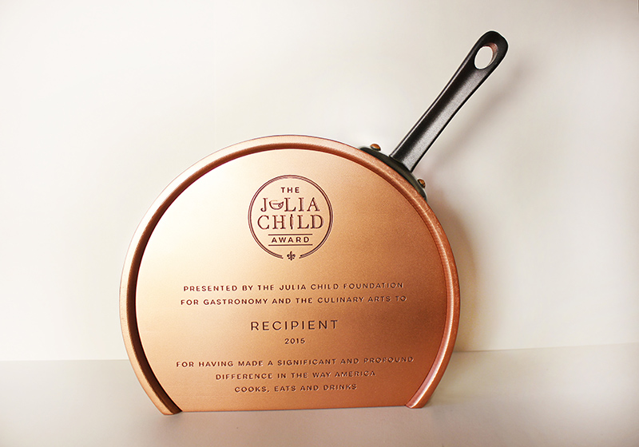

Julia Child

Awards
1965: Peabody Award for Personal Award for The French Chef
1966: Emmy for Achievements in Educational Television- Individuals for The French Chef
1980: U.S. National Book Awards for Current Interest (hardcover) for Julia Child and More Company
1996: Daytime Emmy Award for Outstanding Service Show Host for In Julia’s Kitchen with Master Chefs
2001: Daytime Emmy Award for Outstanding Service Show Host for Julia & Jacques Cooking at Home
Nominations
1972: Emmy for Special Classification of Outstanding Program and Individual Achievement – General Programming for The French Chef
1994: Emmy for Outstanding Informational Series for Cooking with Master Chefs
1997: Daytime Emmy Award for Outstanding Service Show Host for Baking with Julia
1999: Daytime Emmy Award for Outstanding Service Show Host for Baking with Julia
2000: Daytime Emmy Award for Outstanding Service Show Host for Julia & Jacques Cooking at Home